How Sage works
Sage learns from every hunt and fish you log, then scores your upcoming days against that history so you know when your spots are actually worth a sit. This page walks through every part of the app in detail, with real screens from Sage alongside each step.
Use the bar above to jump to a section, or just scroll — everything follows the order you'd naturally set the app up in.
Spots & Properties
Properties are the land you hunt — a lease, a family farm, public ground. Spots are the individual stands, blinds, or waypoints inside that land. Every spot keeps its own history, its own preferred wind, and its own score.
From the Hunting tab, tap the pin icon in the top right to open the map, or use the gear icon next to it for settings. Spots & Properties lives under the map view's toolbar — it lists every property you've created, any Camps you belong to, and every active spot, with an archived section tucked below.
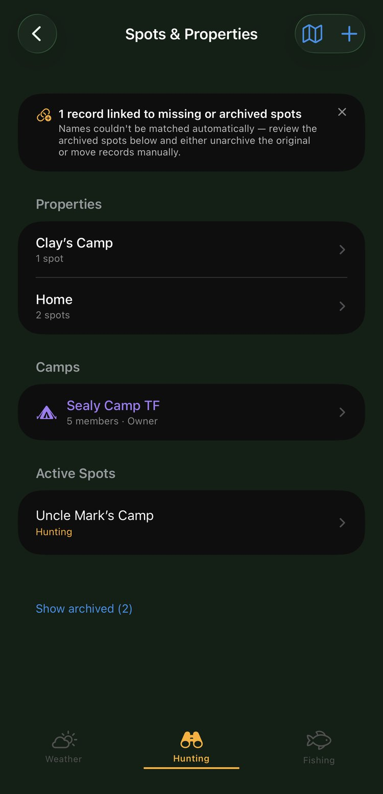
Tap the + in the top right. You'll get three choices: Add spot to drop a new pin, New property to create a piece of land to organize spots under, or New camp to start a shared workspace (covered in the Camp section).
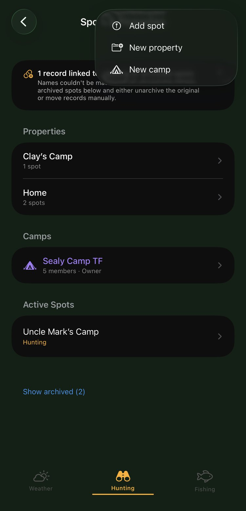
Give it a name (your lease name, "Home," a family farm), then set its location on the map. A property's location is pinned once and stays static — every spot inside that property shares this one location for weather and wind, so pin it at the center of the land, not any one stand.
If you've already got spots sitting around ungrouped, you can check them off right here under Add existing spots to fold them into the new property immediately.
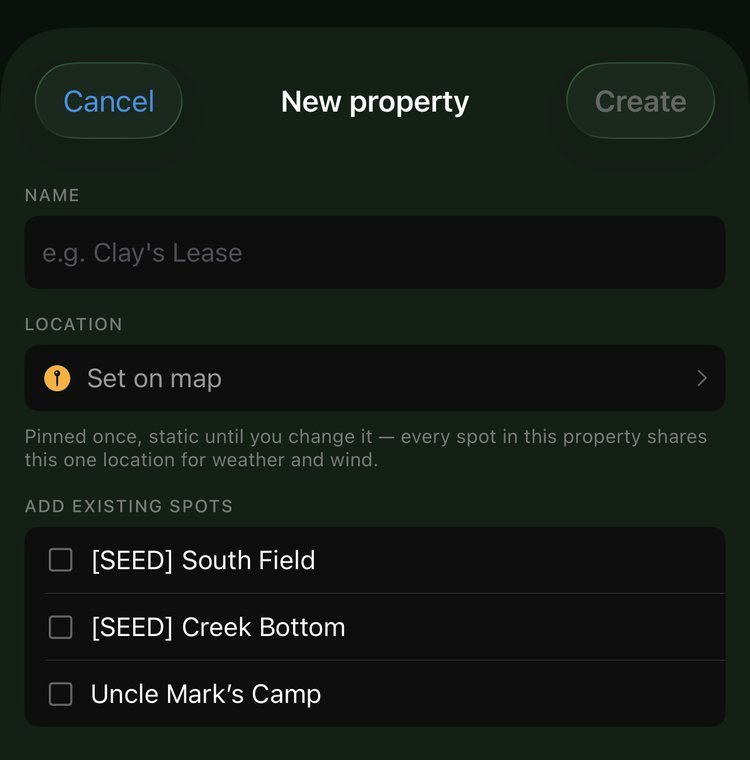
Choose Add spot, name it, and pick a stand type — Box, Ladder, Ground Blind, Climber, Lock-On, Tripod, Food Plot, or Natural. Further down, set the habitat details that actually apply: cover type, water features, terrain, food and attractant sources, and structure or edge features like a funnel or fence line. None of it is required, but the more you fill in, the more Sage has to work with later.
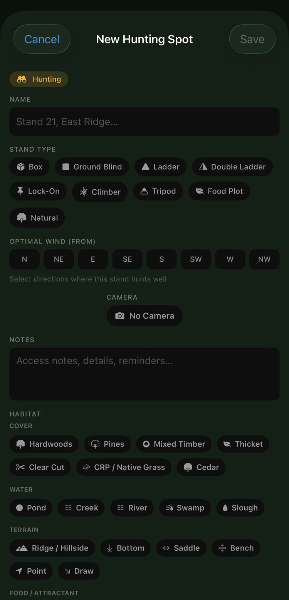
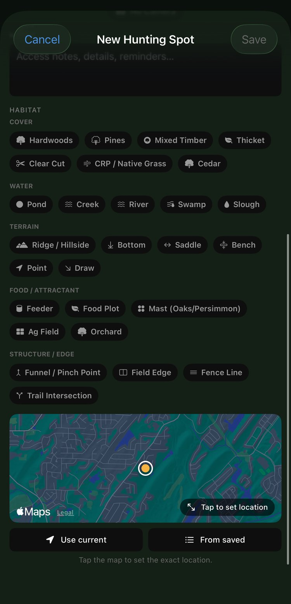
Scroll to the map at the bottom of the New Spot form. Tap Use current to drop the pin where you're standing, pick From saved to reuse a previously saved location, or tap the map itself to open the full-screen location picker and drag the pin to the exact spot.
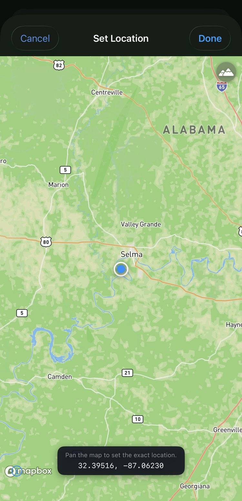
Under Optimal Wind (From), tap every compass direction this stand hunts well in. This is separate from live wind data — it's you telling Sage which winds actually work for this stand's setup, so the app can flag when today's forecast wind lines up.
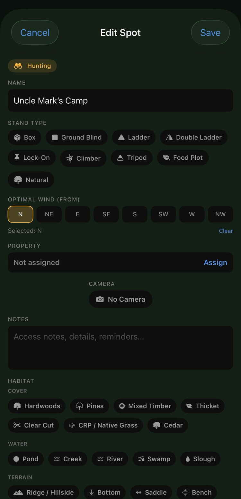
On the Edit Spot screen, the Property row shows the spot's current assignment — "Not assigned" if it's still ungrouped. Tap Assign to open the property picker: choose an existing property, tap Ungrouped to remove it from all properties, or tap Create new property to build one on the spot without leaving this screen.
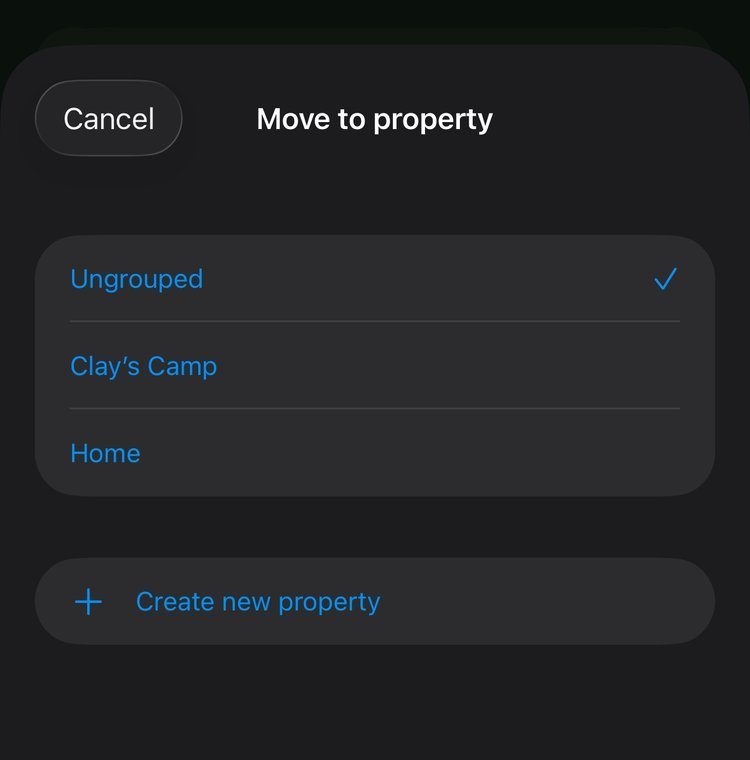
Open any spot's detail page and tap the pencil icon top right. Everything set at creation — name, stand type, optimal wind, property, camera assignment, notes, and every habitat tag — is editable here, and Save writes the changes back immediately.
Every spot's detail page shows today's score, its best window, and why — a wind cone compass shows the live wind against the stand's optimal directions, and tags like time of day or temperature show which factors are matching in your favor. Below that, log counts for the spot break out into three tabs: Sightings, Logs, and Bucks, each scrollable in place.
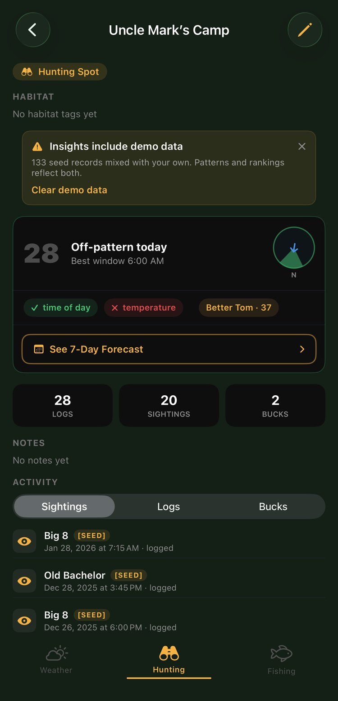
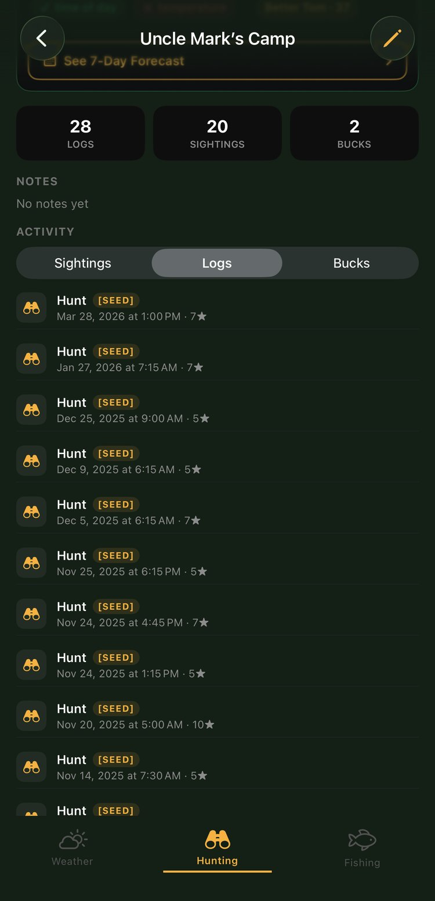
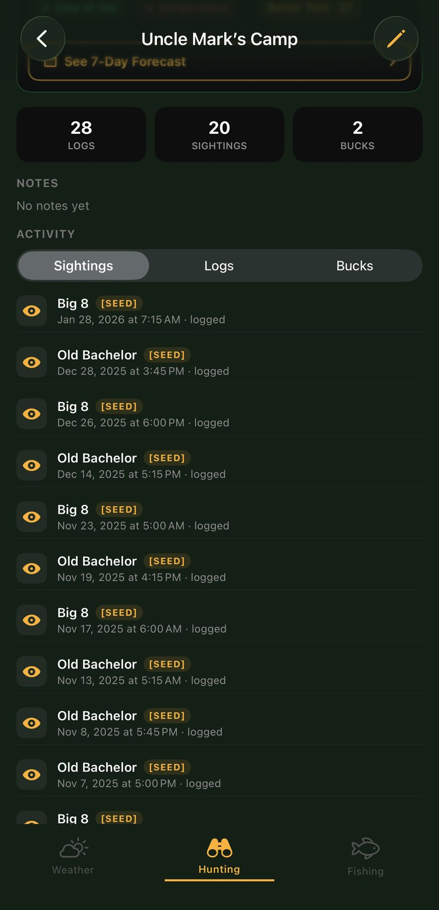
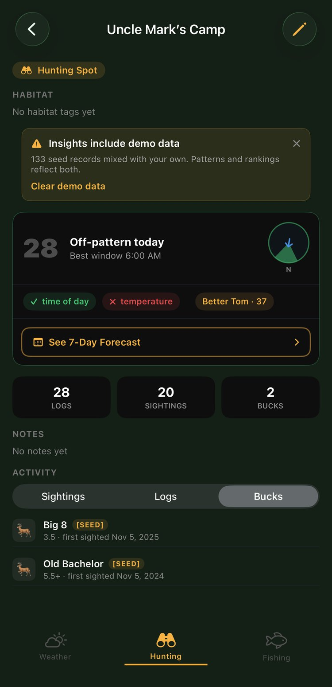
From the Hunting list, swipe left on a spot and tap Archive Spot. Archiving keeps the spot's history intact but pulls it out of active scoring and off the map — use it for a stand you've pulled or a lease you've dropped, not for one you're just not hunting this week.
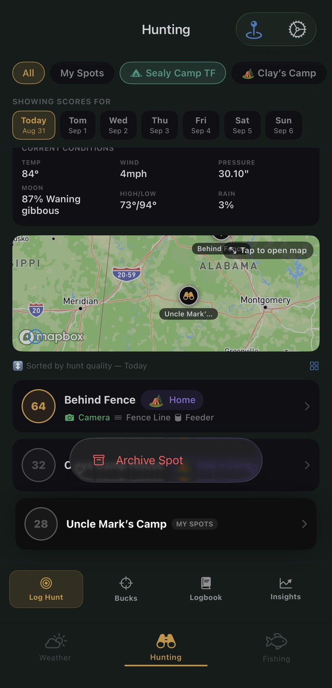
Target Buck
Target Buck tracking follows one specific deer across seasons — every sighting, every camera hit, and a forecast scored against that buck's own pattern, not just the spot's.
From the Hunting tab's bottom row, tap Bucks. Every buck you're tracking shows up under Active, newest sightings first. Bucks tagged [SEED] are demo data — clear it from a buck's detail page once you've got real ones of your own logged.
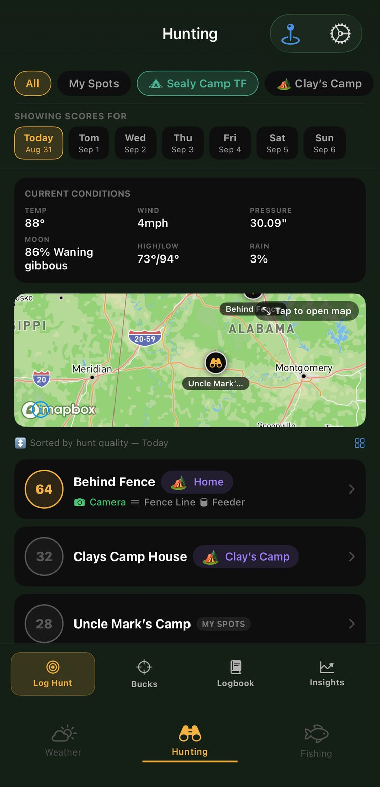
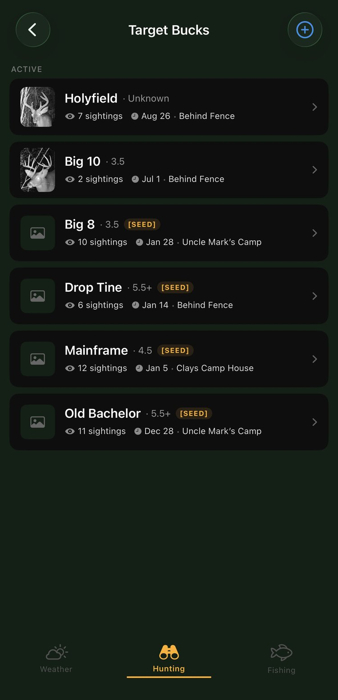
Tap the + in the top right. Give it a name, optionally add a photo (from a trail cam hit or your camera roll), set an estimated age, and pick the spot where you first sighted him. The button in the top right starts as Add Name — that's telling you what's still needed, not a separate action. It becomes an active Save once you've typed a name.
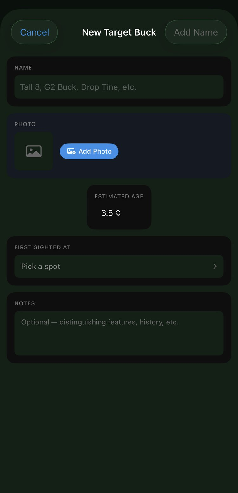
From a buck's detail page, tap Log Sighting. Add up to 5 photos, confirm the location (defaults to the spot you're logging from), set the time, bump the count if multiple animals were with him, and add notes. Every sighting you log feeds that buck's pattern data immediately.
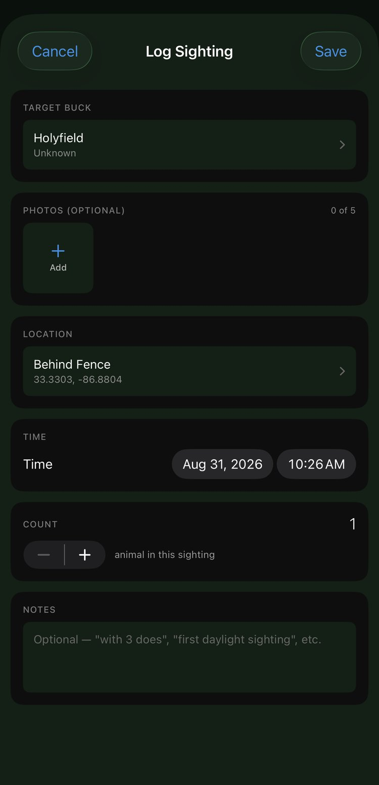
Tap any sighting in a buck's list to open its detail. Weather conditions are logged both 2 hours before and at the sighting — temperature, pressure, wind, and cloud cover — so you can see exactly what was happening when he showed up, not just the average for the day.
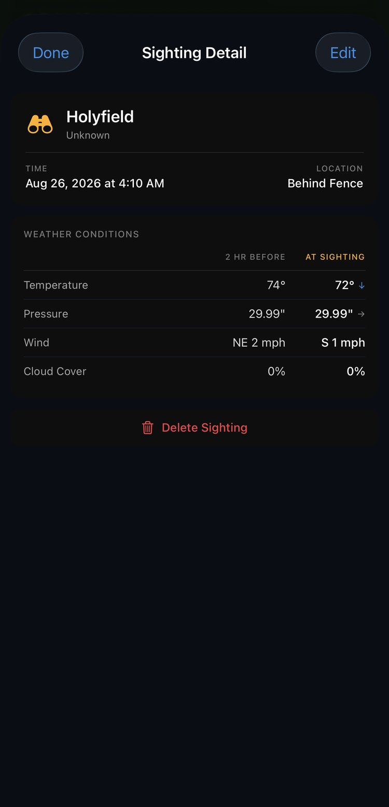
The top of every buck's detail page shows total sightings, first sighted, and last seen with location for each. Below that, a Forecast Match card scores today specifically for the spot he's most associated with — same 0–100 score and wind cone you'd see on that spot's own page.
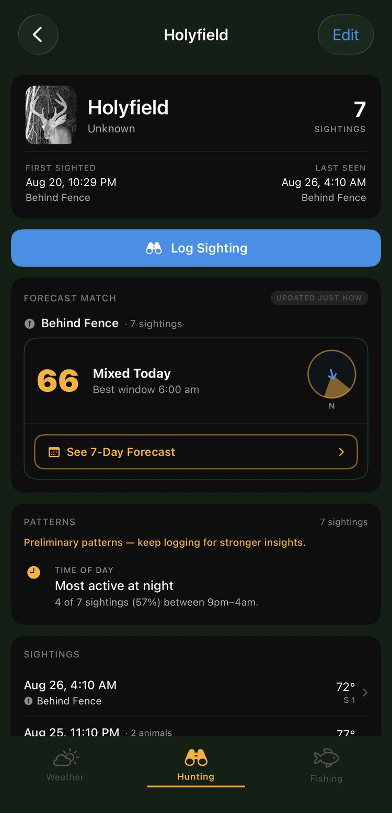
The Patterns section below the forecast card is specific to this buck, not the spot in general — time-of-day activity built from his own sighting history. Sage flags it as preliminary until there's enough data logged to be confident in it.
Tap See 7-Day Forecast on the Forecast Match card. It breaks each day down the same way the app scores any spot — a full factor list of what's working in your favor and what's off-pattern, from wind direction down to solunar and cold front proximity.
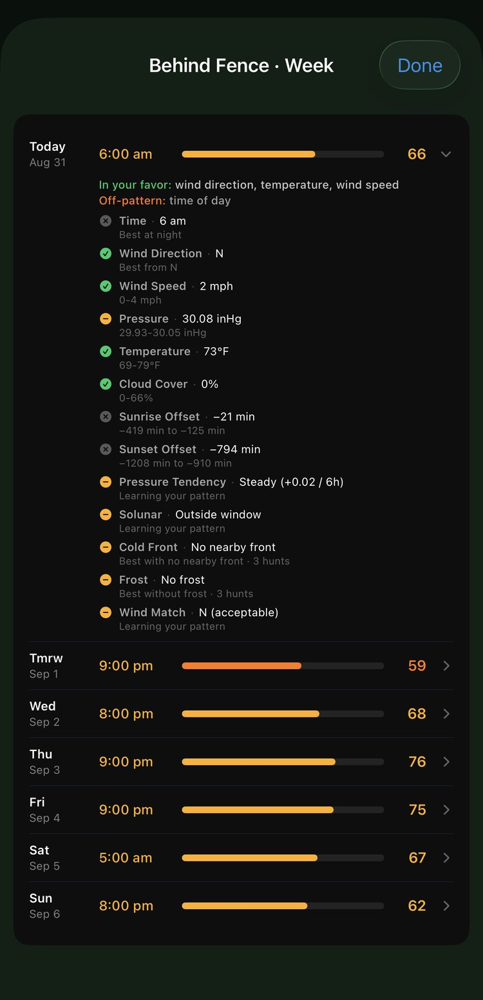
Tap Edit from the buck's detail page. Everything set at creation — name, photo, estimated age, primary spot, first sighted date, and notes — is editable here.
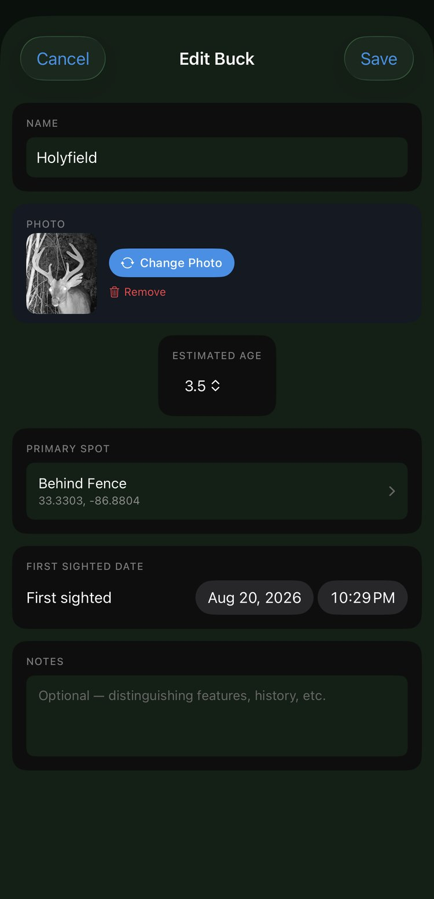
Scroll to the bottom of a buck's detail page. Archive Buck pulls him out of the active list without losing any sighting history — use this once he's been taken or you've stopped tracking him. Archived bucks show Unarchive Buck instead, so you can bring one back. Delete Buck is permanent.
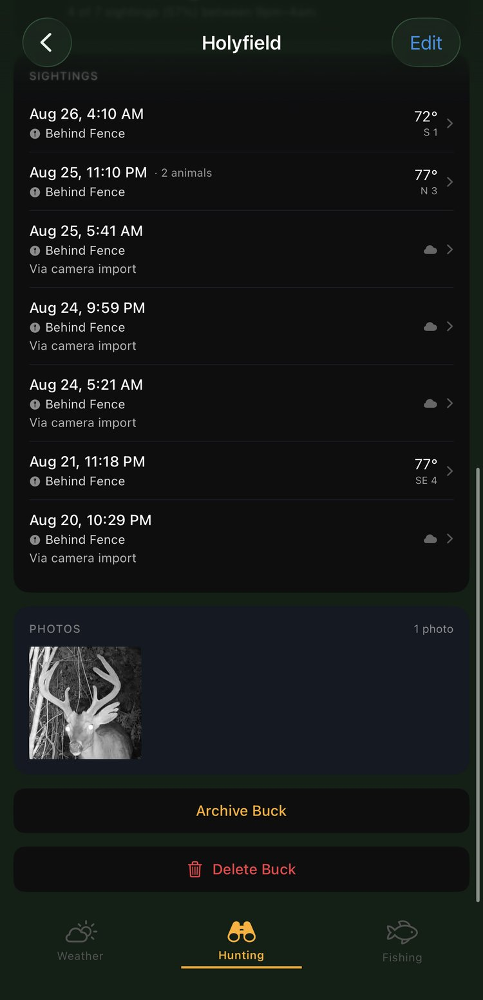
Trail Cam
Trail cam photos aren't just stored in a gallery — deer tallied from your cam hits feed directly into a spot's Pattern Match score. Import happens as a batch, straight from your camera app's share sheet.
From your trail camera app (Reveal shown here, but any app that can share photos works), select the photos you want to bring in and tap Share. Tap the Sage icon in the share sheet.
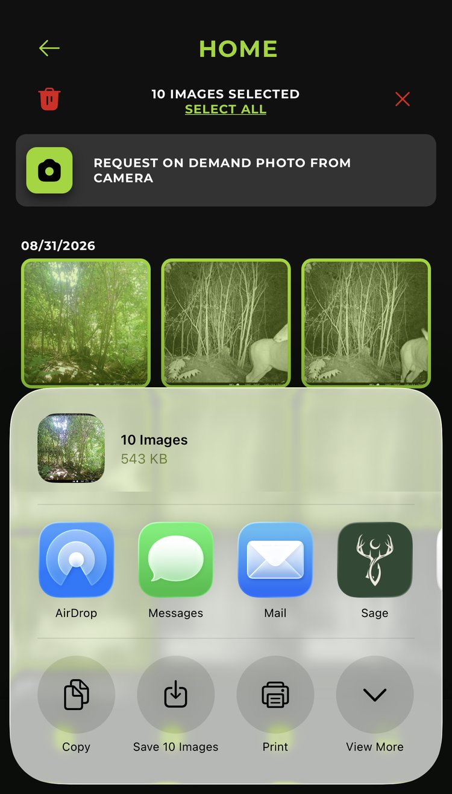
Sage opens straight to a Send to Sage screen showing every photo about to come in, with an optional quick note for the batch (handy for "split G2 camera" type context). These photos will sit in Sage's Camera List until you assign them to a spot — nothing scores yet.
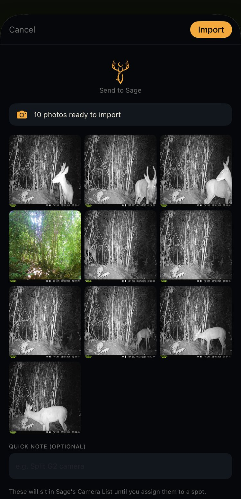
Back in Sage, the Hunting tab shows a banner — "X trail-cam photos ready to import" — as soon as a batch is waiting. Tap it to continue.
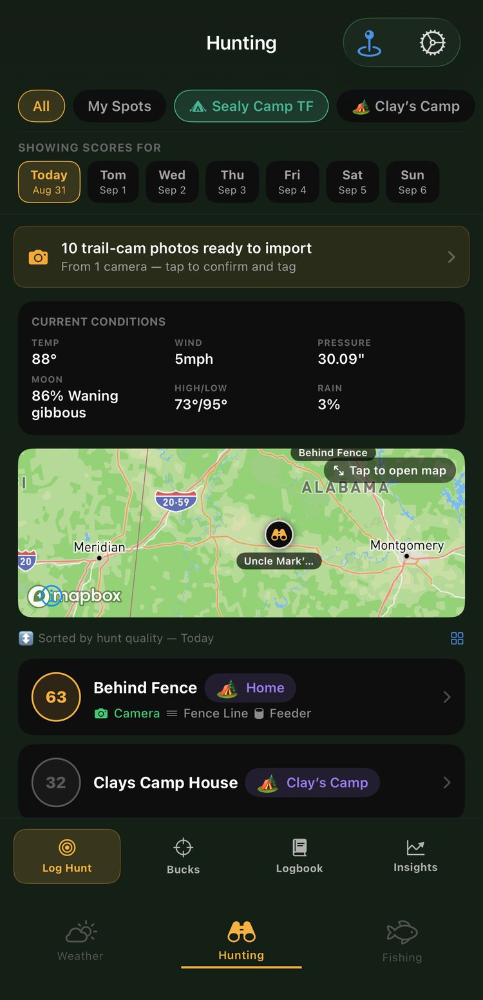
Photos are grouped by burst. If you already picked through them in your camera app, everything's pre-checked — tap to uncheck anything that snuck in by mistake, then Continue.
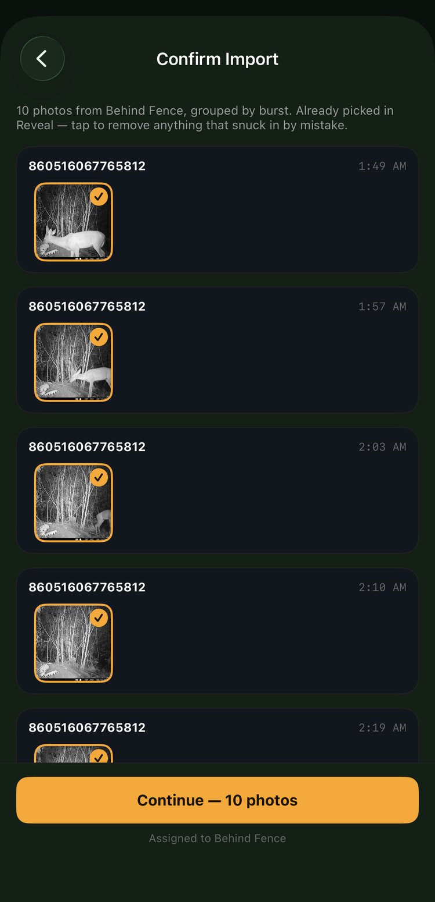
For each photo, tag a Target Buck if one's in frame, and use the Other Deer in Frame counters — Mature Bucks, Young Bucks, Does, Fawns — to tally everything else. This tally is what feeds the spot's score, so it's worth doing even on photos with no target buck. Skip is always there for a blank or bad frame.
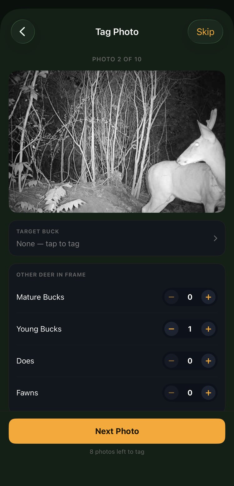
Tap the Target Buck row to pick from your existing bucks, or tap New Buck Seen on Camera to create one on the spot without leaving the tagging flow.
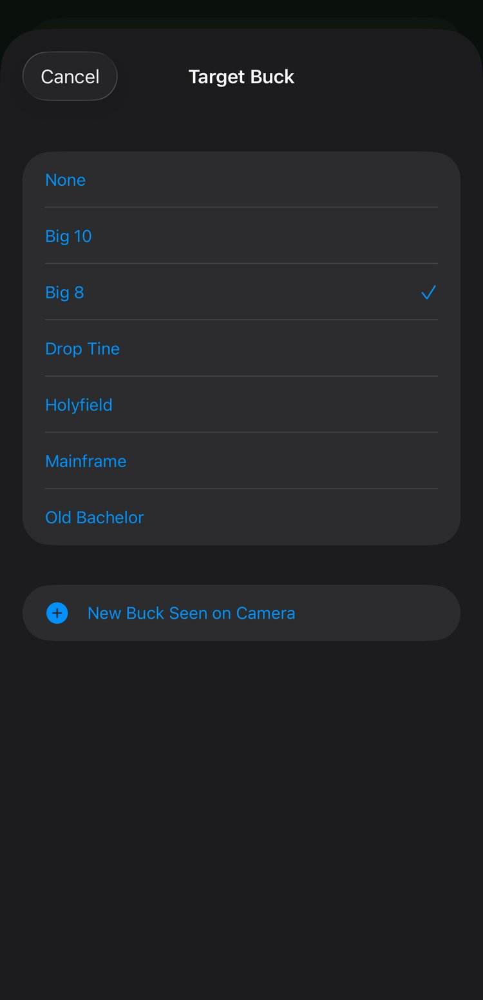
Under Cameras, each device shows up by the ID parsed from its photo filenames — that's not a spot name, just a way to tell cameras apart. The Suggested Spot is only your last pick for that device; tap Change any time, since cameras get moved mid-season. Registered cameras below show which spot each is currently tied to and whether it's up to date.
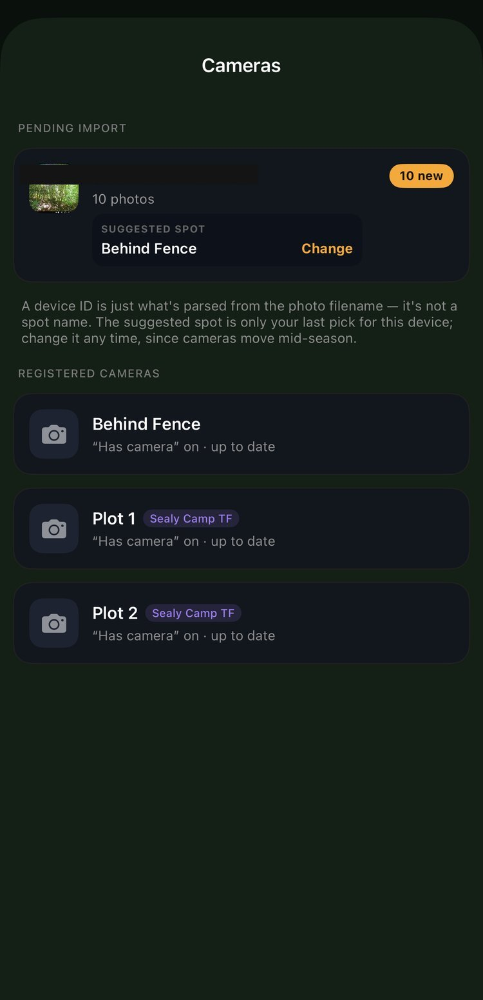
Filter the Logbook to Camera to see every import as its own entry — deer tallies, spot, weather at the time, all listed the same way a logged hunt is.
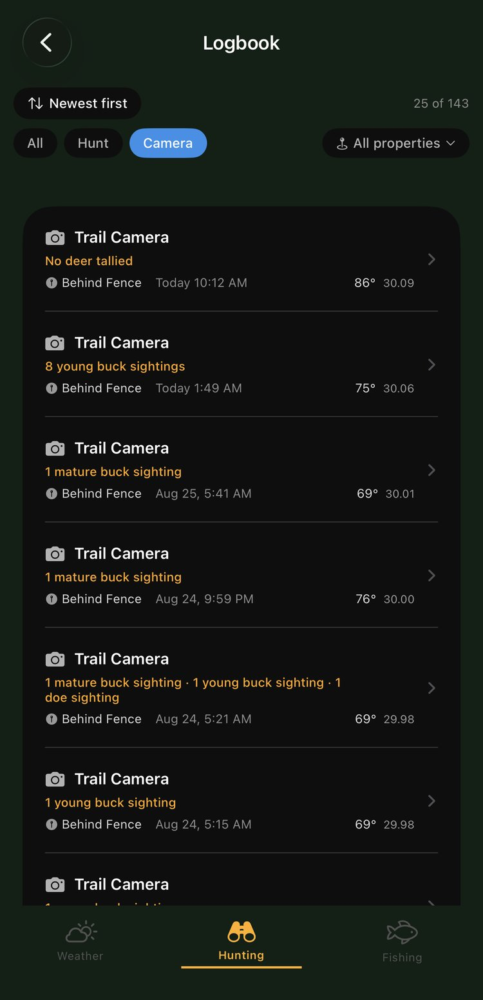
Camp
Camp is a shared workspace for a hunting group — shared spots, a shared logbook, shared target bucks, stand reservations, and Camp Insights that roll everyone's hunts together. Everything in this section applies inside a Camp; your personal spots and logbook stay separate.
From Spots & Properties, tap + and choose New camp. Give it a name and pin its location on the map — that location is shared by every spot in the camp for weather and wind, the same way a personal property works. You land inside the new camp immediately after creating it; invite members afterward from Camp Settings.

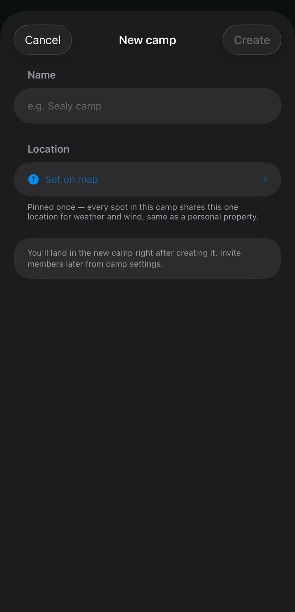
Camp sharing runs on iCloud's native share sheet. Send the invite through Messages, Mail, or Copy Link, and set who can do what before you send it: Permission controls whether invitees can make changes or only view, and Adding People controls whether invited members can invite others too.
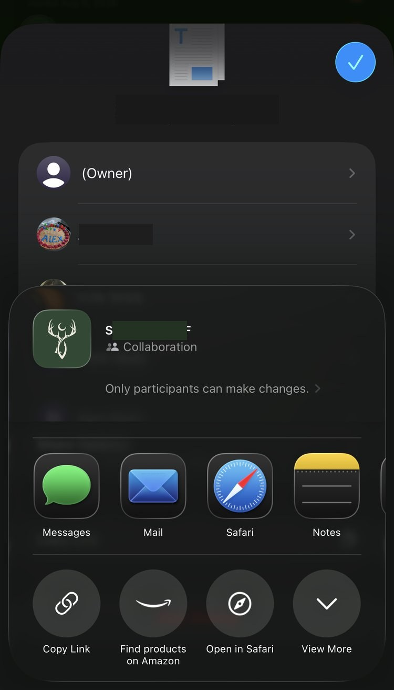
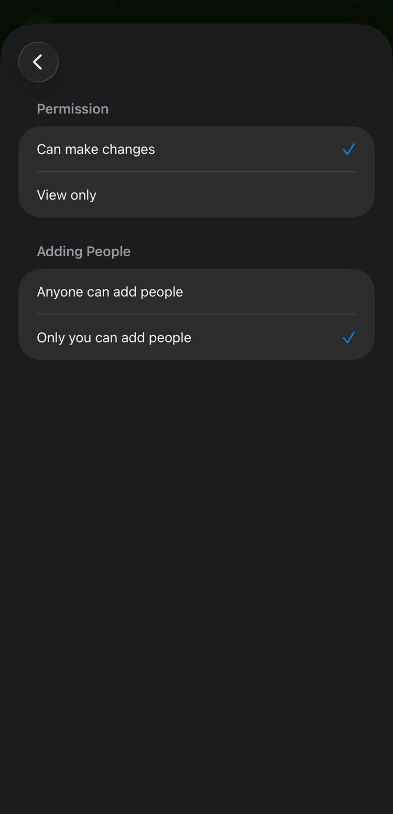
Camp Settings shows the full roster with join dates and roles, plus an overview of the camp's name, location, creation date, and season. Tap the red minus next to a member to remove them from the camp.
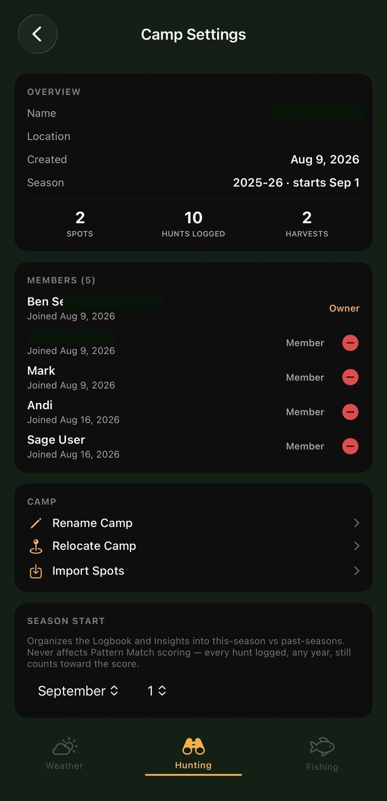
Further down, Rename Camp, Relocate Camp, and Import Spots sit under Camp. Season Start only organizes the Logbook and Insights into this-season versus past-seasons — it never affects Pattern Match scoring, since every hunt logged in any year still counts toward the score. Guest Policy controls whether members can bring guests when reserving a spot, with an optional cap per reservation and per year. Danger Zone holds Archive Camp and permanent deletion.
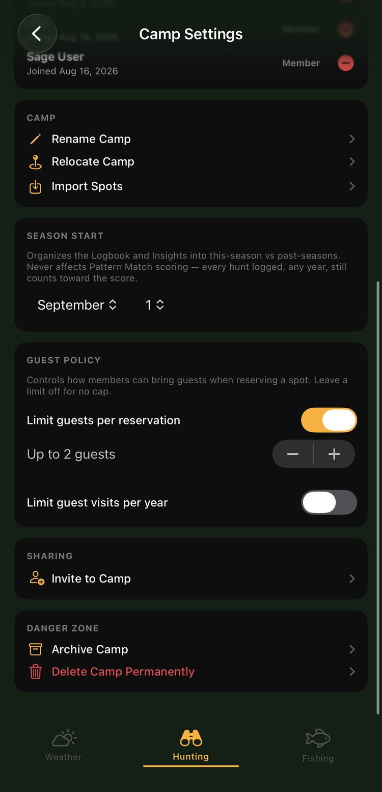
Same + menu, Add spot — name it, choose Hunting or Fishing, and set its location on the map. Camp spots use a lighter setup than personal spots; habitat detail and other tags can still be added later from the spot's own edit screen.
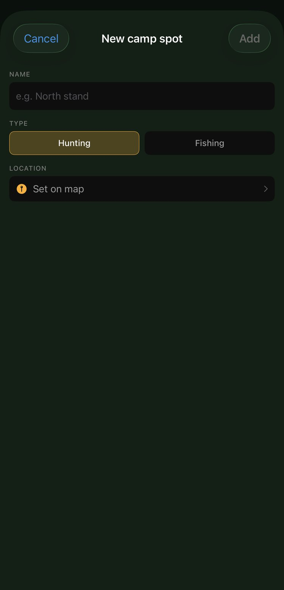
Tap the map icon in the camp header to see every spot plotted together. The Scent Cones toggle overlays each stand's wind cone against the current wind direction, so the whole group can see at a glance which stands are in play. The layers icon switches between Standard, Hybrid, Satellite, and Outdoors map styles.
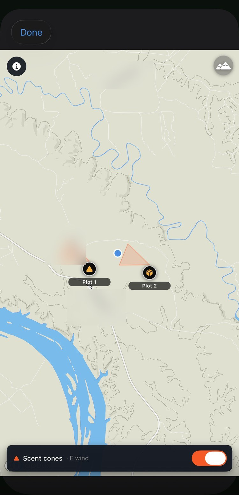
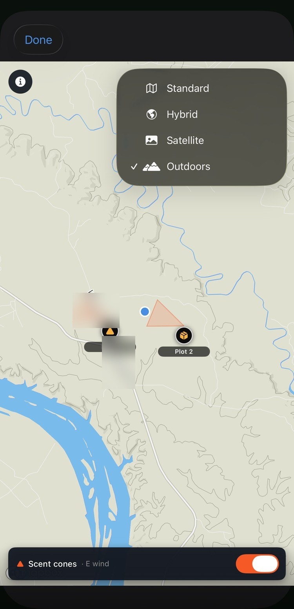
The camp's Hunting Home works like your personal one, with a member avatar stack up top and the same date tabs and forecast card. Each spot shows its score and status — Open · reserve a time in green, or Reserved by [name] in red if someone's already got it. Tap an open spot, pick a day on the calendar, choose AM, PM, or All Day, and tap Reserve.
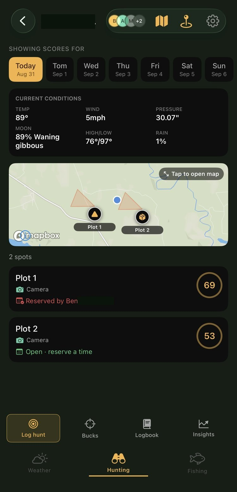
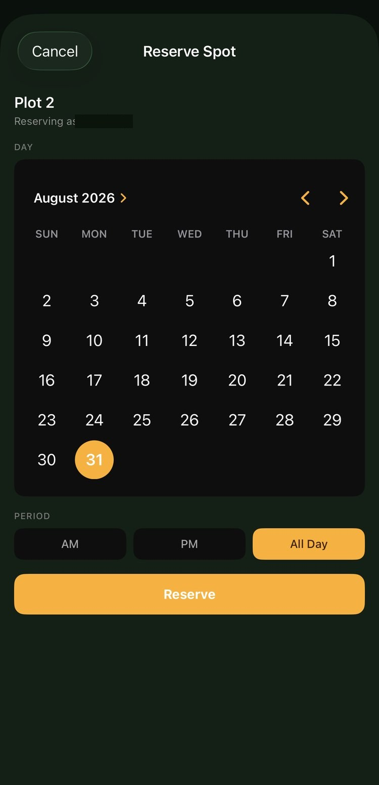
A camp spot's page looks like a personal spot's — badges, habitat, score, wind cone, factor chips — but the hunt count breaks out by member ("5 hunts · 4 by you, 1 by Asealy8"). Sightings and target buck tracking aren't built for camp spots yet; the app says so plainly rather than just showing a silent zero. A Camera at this spot toggle marks whether a trail cam covers it, and the Activity list mixes hunts and camera imports from every member, each tagged with who logged it.
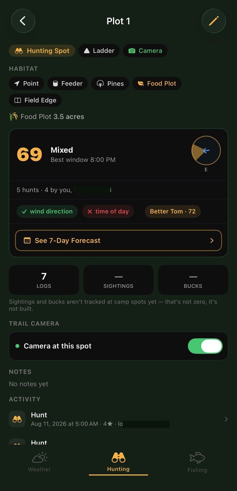
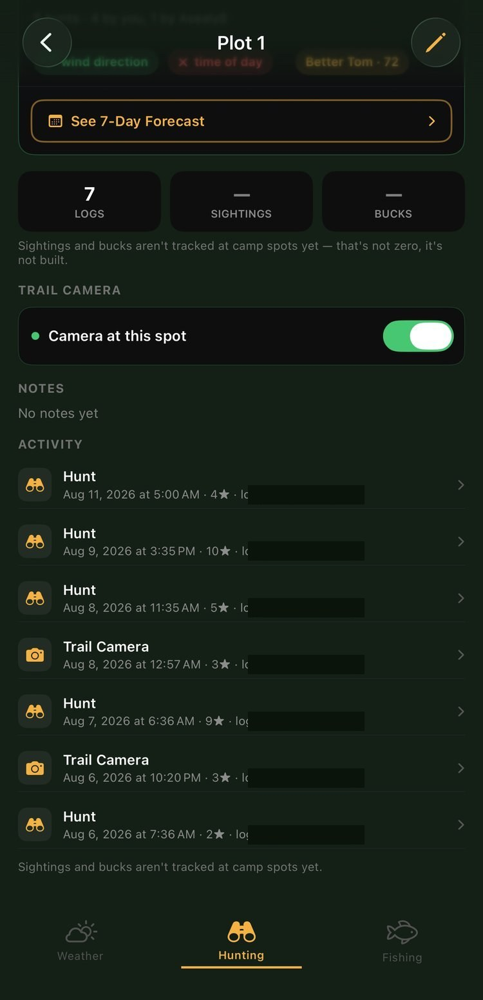
The 7-day view names its own pattern source right at the top — "Pattern from top 2 of 4 hunts by deer count," for example — so it's clear the score is drawn from the group's most productive hunts, not just averaged across everyone. Tap into any day for the full factor breakdown. At a camp spot with a trail cam, Camera Activity shows up as its own factor row alongside wind, pressure, and solunar — recent cam hits genuinely feed the score here, not just the hunt logs.
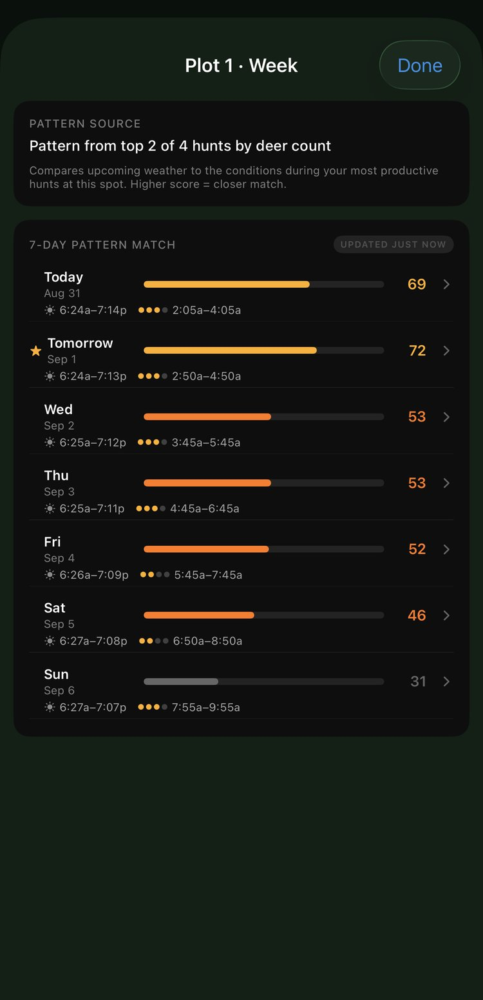
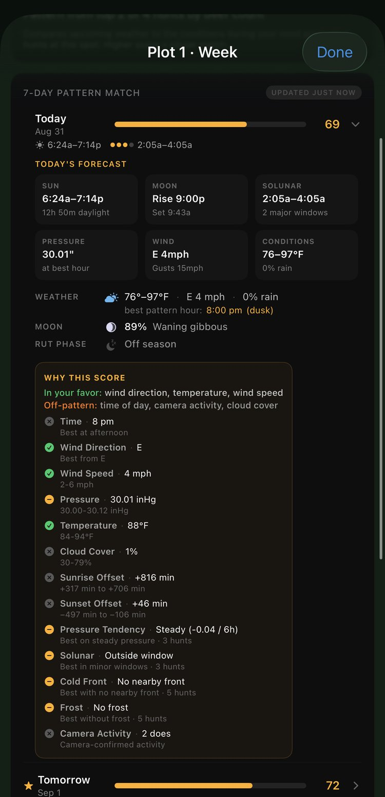
Filter by Type, Spot, or Member. Reservations with no hunt logged show up as ghosted entries so the group can see who reserved a time and never followed up with a log — real hunt and camera entries show a deer-count badge and who logged them.
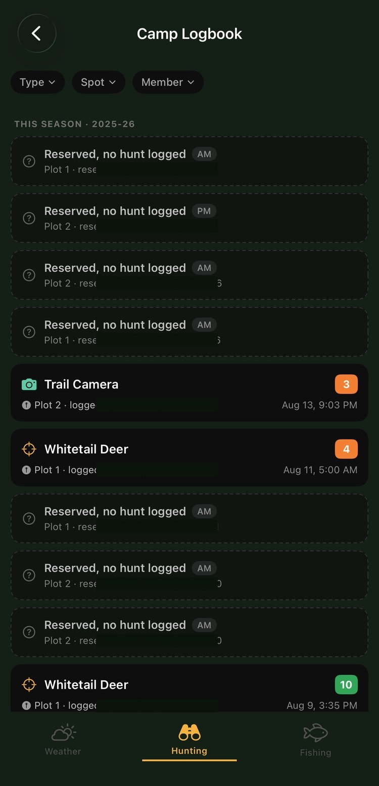
Bucks tracked at the camp level work the same as personal target bucks, with one addition: each shows where and who first spotted him — "First seen at Plot 2 · by Ben Sealy."
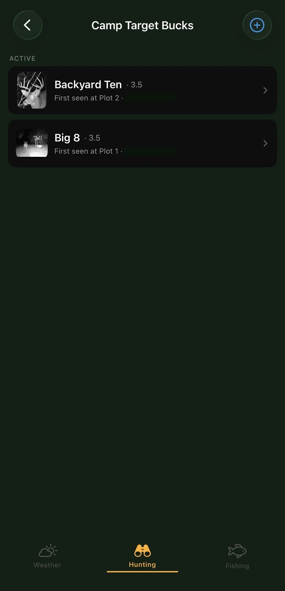
Camp Insights rolls up everyone's hunts: total encounters, buck-to-doe ratio, median first-sight time, and best-performing spot by deer per hour, with a This Season / All Time toggle. Scroll further for pressure trend, best time-of-day window, moon phase performance, and activity broken out by month, by spot, and by member — so the group can see not just what's working, but who's finding it.
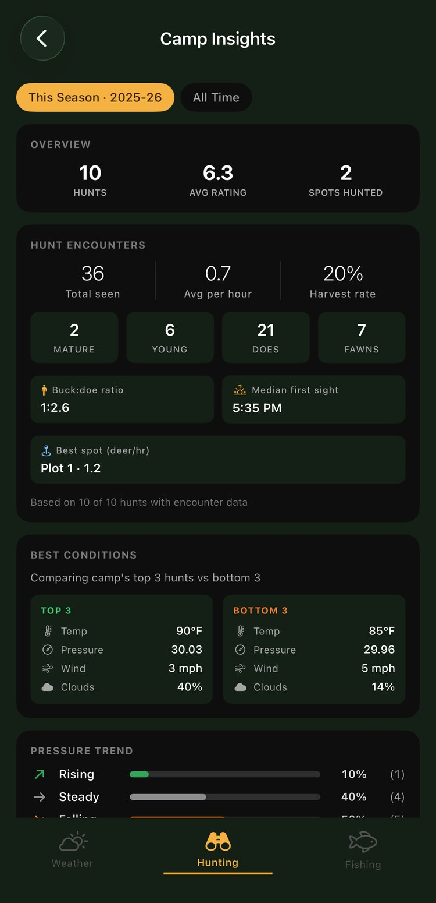
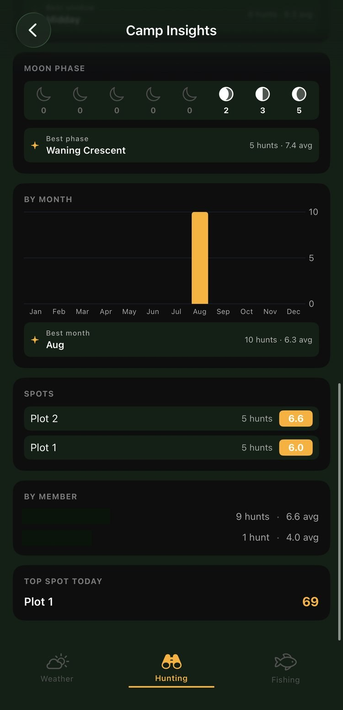